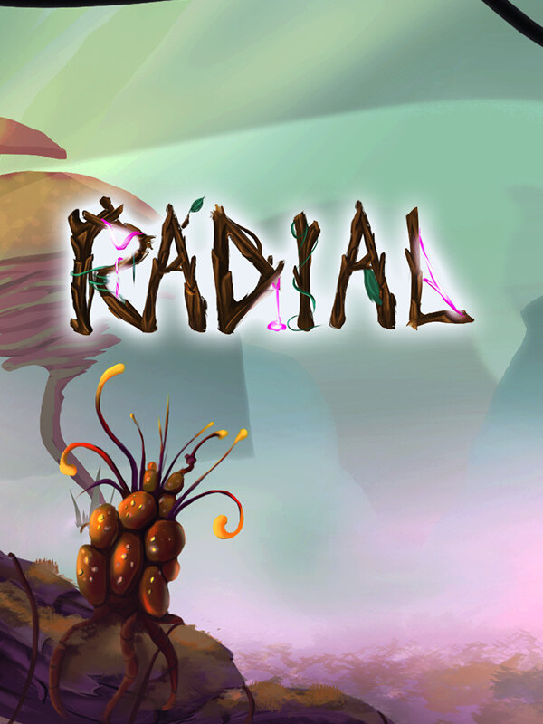

Radial
Radial
Details
|  | |
| Playtime | Not Played |
| Last Activity | Never |
| Added | 25/04/2020 |
| Modified | Never |
| Completion Status | Not Played |
| Source | Steam |
| Platform | PC |
| Release Date | 06/02/2020 |
| Community Score | 50 |
| Critic Score | |
| User Score | |
| Genre | Action Indie |
| Developer | Dreamseeker |
| Publisher | Creajeux |
| Feature | Single Player |
| Links | PCGamingWiki Community Hub Discussions Guides Store Page News |
Description
While his planet is undergoing an unprecedented ecological disaster, an adventurous scientist is searching for Radium crystals from all over the world. These crystals are the key of his researches on the Radial, an energy that allows him to push back the limits of space and time ...
Embody this researcher that nothing stops, nor the lush nature made hostile by the radiation of the disaster, nor the ferocious beasts that inhabit it, even less the puzzles and acrobatic courses he will encounter on the way!
Discover a colorful universe, mysterious and captivating, supported by a poetic original soundtrack. Master the Radial's powers like teleportation portals or slower time. And go beyond your limits in levels specially designed for the speedrun!
Will you take up the challenge?
• Responsive plateform mechanics
Jumps, Double Jumps, Dashes, Portals, make plenty of aerial acrobatics and analyse the level to find your way through the obstacles, the verticality, narrow passes and dizzying jumps!
• Fights?!
You will probably meet fierce creatures whose genome has been altered by the disaster... and their primal instinct will make them to stop your adventure... But don't panic! Thanks to Radial power, create defensive portals, absorb projectiles and send bullets back against your opponents. You can also use your air agility to avoid frontal attacks! Dodge or confrontation it's up to you!
• Hidden collectibles
In each of the 9 levels, 3 Radial crystals are hidden. To find those crystals, you'll need cleverness, skill, and sometimes just enough curiosity to find their hiding place. Catching those shiny rocks represents an optional entertainment for those who like challenges and exploration!
Feel free to explore the levels that you have already finished to collect them all!
• Did you say Speedrun?
Each level has been designed in order to allow perfectionists, obstinate players (also known as speedrunners), to surpass themselves and beat speed records! Take advantage from every height and slope to accumulate speed and make your run faster, each second is precious.
Will you earn bronze, silver... or maybe gold medals, who knows?
• Control
- moving: A and D
- jump: space
- dash: left Shift
or double jump: space + space (reinit when player touches the ground)
- throwing teleportation portals: left and right clic
- removing portals: mouse wheel clic
- defensive portals: W
- returning absorbed projectile: W
- laser: F (reinit when hits an enemy)
• Development
This project was realized by a team of 9 students from Créajeux. We were having 4 months to do this at the end of our first year! (Don't hesitate to try our second year project "Inari the last kami")
Embody this researcher that nothing stops, nor the lush nature made hostile by the radiation of the disaster, nor the ferocious beasts that inhabit it, even less the puzzles and acrobatic courses he will encounter on the way!
Discover a colorful universe, mysterious and captivating, supported by a poetic original soundtrack. Master the Radial's powers like teleportation portals or slower time. And go beyond your limits in levels specially designed for the speedrun!
Will you take up the challenge?
• Responsive plateform mechanics
Jumps, Double Jumps, Dashes, Portals, make plenty of aerial acrobatics and analyse the level to find your way through the obstacles, the verticality, narrow passes and dizzying jumps!
• Fights?!
You will probably meet fierce creatures whose genome has been altered by the disaster... and their primal instinct will make them to stop your adventure... But don't panic! Thanks to Radial power, create defensive portals, absorb projectiles and send bullets back against your opponents. You can also use your air agility to avoid frontal attacks! Dodge or confrontation it's up to you!
• Hidden collectibles
In each of the 9 levels, 3 Radial crystals are hidden. To find those crystals, you'll need cleverness, skill, and sometimes just enough curiosity to find their hiding place. Catching those shiny rocks represents an optional entertainment for those who like challenges and exploration!
Feel free to explore the levels that you have already finished to collect them all!
• Did you say Speedrun?
Each level has been designed in order to allow perfectionists, obstinate players (also known as speedrunners), to surpass themselves and beat speed records! Take advantage from every height and slope to accumulate speed and make your run faster, each second is precious.
Will you earn bronze, silver... or maybe gold medals, who knows?
• Control
- moving: A and D
- jump: space
- dash: left Shift
or double jump: space + space (reinit when player touches the ground)
- throwing teleportation portals: left and right clic
- removing portals: mouse wheel clic
- defensive portals: W
- returning absorbed projectile: W
- laser: F (reinit when hits an enemy)
• Development
This project was realized by a team of 9 students from Créajeux. We were having 4 months to do this at the end of our first year! (Don't hesitate to try our second year project "Inari the last kami")